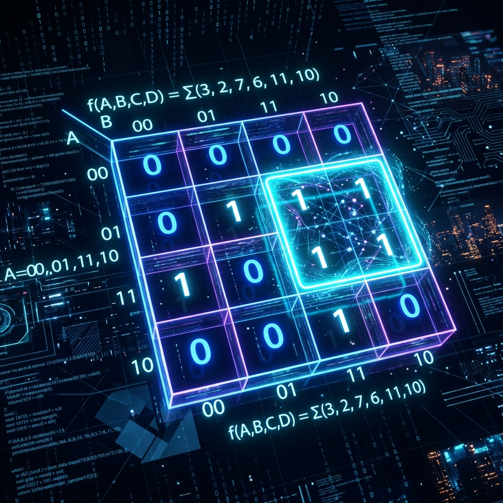

1. The Memory Wall and the Von Neumann Bottleneck
In modern computer architecture, the evolution of processor speeds has historically outpaced the advancement of main memory (DRAM) access speeds. This divergence is famously known as the Memory Wall. While CPU frequencies scaled exponentially throughout the late 20th and early 21st centuries, DRAM latencies improved at a much more sluggish pace. This fundamental disparity gives rise to the Von Neumann Bottleneck, where the processor spends an excessive amount of time stalled, waiting for instructions and data to be fetched from memory rather than executing operations.
To bridge this performance gap, architects introduced the memory hierarchy, a structural approach designed to provide the illusion of a memory system that is as fast as the fastest SRAM (Static Random-Access Memory) and as large as the most capacious DRAM or persistent storage. At the very top of this hierarchy, sitting adjacent to the CPU registers, lies the Cache Memory. Cache is a small, ultra-fast memory pool built directly into the processor die. Its sole purpose is to temporarily hold subsets of data from the much larger, slower main memory, allowing the processor to execute instructions at near full speed.
The effectiveness of cache memory relies entirely on statistical probabilities—specifically, the likelihood that the CPU will request the same or adjacent memory locations in the near future. This brings us to the most critical concept in memory architectures: the Principle of Locality.

2. The Principle of Locality: Temporal and Spatial
Cache architectures are not magic; they are highly optimized systems built upon the predictable nature of software execution. The overwhelming majority of software programs exhibit predictable memory access patterns, a phenomenon known as the Principle of Locality. This principle is divided into two distinct types: Temporal Locality and Spatial Locality.
Temporal Locality
Temporal locality refers to the tendency of a processor to access the same memory location repeatedly within a short timeframe. If a data element is accessed once, it is highly probable that it will be accessed again soon. A classic example is a loop counter variable or an accumulator in a sum operation. Because the variable is read and modified in every iteration of the loop, keeping it in the ultra-fast L1 cache prevents the CPU from having to fetch it from the slower L2, L3, or main memory repeatedly. By capturing temporally local data, the cache drastically reduces memory access latency.
Spatial Locality
Spatial locality, on the other hand, describes the tendency of a processor to access memory locations that are physically adjacent to those it has recently accessed. The most common manifestations of spatial locality are sequential instruction execution and data array traversals. When a program executes linearly, the next instruction to be fetched is usually located at the next contiguous memory address. Similarly, iterating through an array involves reading adjacent memory cells. Cache architectures exploit spatial locality by transferring data from main memory to cache not in isolated bytes or words, but in fixed-size blocks known as Cache Lines (typically 64 bytes in modern x86/ARM processors). When a cache miss occurs, the memory controller fetches the entire cache line, pre-emptively loading adjacent data that the CPU is highly likely to request next.
3. Anatomy of a Cache System
To fully grasp how cache operates, we must dissect its internal structure. A cache memory is not merely a raw array of bytes; it is a structured table of cache lines. Each entry in the cache consists of three primary components: the Data Block, the Tag, and the Status Bits (Valid and Dirty bits).
- Data Block: The actual payload fetched from main memory, containing the cached instructions or data.
- Tag: A unique identifier that stores the upper bits of the physical memory address. Because many main memory addresses can map to the same cache location, the tag acts as a signature to confirm which memory block is currently residing in the cache line.
- Valid Bit: A single boolean flag indicating whether the data in the cache line is valid and usable. Upon system reset, all valid bits are initialized to 0, ensuring the CPU does not read garbage data left over from a previous state.
- Dirty Bit: Used specifically in write-back caches, this bit flags whether the cached data has been modified by the CPU but not yet written back to main memory. If the dirty bit is set, the cache line must be written back to DRAM before it can be evicted and replaced.
When the CPU issues a memory request, the physical address is partitioned into three segments: the Tag, the Index, and the Block Offset. The Offset determines which specific byte within the cache line is being requested. The Index selects the specific cache line or set to check. Finally, the cache controller compares the Tag of the requested address against the Tag stored in the cache. If they match and the Valid bit is set, a Cache Hit occurs. If they do not match, a Cache Miss is registered, triggering a costly fetch from lower levels of the memory hierarchy.
4. Mapping Functions: Direct-Mapped, Set-Associative, and Fully Associative
The method by which main memory blocks are assigned to cache lines is known as the mapping function. The choice of mapping function profoundly impacts the cache's hit rate, latency, and hardware complexity. There are three primary mapping strategies employed in processor design.
Direct-Mapped Cache
In a direct-mapped cache, each memory block maps to exactly one, and only one, specific cache line. The mapping is determined by a simple modulo operation: Cache_Line_Index = (Block_Address) modulo (Number_of_Cache_Lines). Direct-mapped caches are extremely fast and require minimal hardware logic because only a single tag comparison is needed per memory access. However, they suffer significantly from conflict misses. If two active variables map to the exact same cache line, they will constantly evict each other in a phenomenon known as thrashing, plummeting the cache hit rate. While direct-mapped caches are rare in modern L1 data caches due to this vulnerability, their simplicity makes them appealing for highly specific low-latency buffers.
Fully Associative Cache
A fully associative cache represents the opposite extreme: a memory block can be stored in absolutely any cache line, regardless of its address. This completely eliminates conflict misses, as a block is only evicted when the entire cache is physically full (a capacity miss). To retrieve data, the cache controller must compare the requested tag against all tags in the cache simultaneously. This requires implementing the cache using Content Addressable Memory (CAM), which is exceptionally power-hungry, slow, and expensive in terms of silicon area. Consequently, fully associative caches are typically restricted to very small structures, such as the Translation Lookaside Buffer (TLB) used in virtual memory paging.
N-Way Set Associative Cache
Set associative mapping offers a hybrid compromise, combining the high hit rate of fully associative caches with the hardware efficiency of direct-mapped designs. In an N-way set associative cache, the cache is divided into sets, with each set containing 'N' independent cache lines (ways). A memory address maps to a specific set, but the block can be placed in any of the 'N' ways within that set. For instance, in an 8-way set associative L1 cache, the CPU isolates the set index, then simultaneously compares the requested tag against the 8 tags residing in that specific set. If 8 active variables all map to the same set, they can coexist peacefully. Most modern L1 and L2 caches are 4-way, 8-way, or 16-way set associative, representing the optimal mathematical sweet spot for minimizing conflict misses without incurring the massive timing penalties of CAM.
5. Cache Replacement Policies and Write Strategies
When a cache miss occurs and the target set is completely full, the cache controller must evict an existing block to make room for the incoming data. The algorithm deciding which block to evict is the Replacement Policy. The most common and effective strategy is Least Recently Used (LRU), which evicts the block that has gone the longest time without being accessed, assuming that if it hasn't been used recently, it won't be used soon. Since true LRU requires complex tracking hardware, most processors implement Pseudo-LRU (pLRU) using a binary tree structure. Other algorithms include First-In-First-Out (FIFO) and Random Replacement, though LRU generally yields superior performance.
Another crucial architectural decision is the Write Policy, which dictates how the cache handles memory write operations. In a Write-Through policy, every modification is written simultaneously to both the cache and the main memory. This ensures absolute data coherence but generates immense memory bus traffic, creating a massive bottleneck. Conversely, modern processors predominantly utilize a Write-Back policy. Modifications are written only to the L1 cache, and the Dirty bit is set. The updated data is only flushed to main memory when the modified cache line is eventually evicted. This drastically reduces memory bus traffic but requires complex cache coherency protocols (like MESI) in multi-core systems to ensure other cores do not read stale data from DRAM.
6. Simulating a Cache Line in SQGATE
Understanding cache is much easier when you can visualize the logic gates behind it. In the SQGATE simulator, we can construct the foundational block of a Direct-Mapped Cache entry using our built-in RAM modules and comparators. Below is a JSON snippet defining a simple 8-bit cache tag comparator and a data valid logic gate.
{
"project": "SQGATE_Cache_Sim",
"components": [
{
"type": "RAM8",
"id": "cache_data_array",
"x": 100, "y": 150,
"label": "Data Array (Cache Line)"
},
{
"type": "Comparator8",
"id": "tag_comparator",
"x": 300, "y": 100,
"label": "Tag Match Evaluator"
},
{
"type": "AND",
"id": "hit_logic",
"x": 450, "y": 125,
"inputs": ["tag_comparator.out_eq", "valid_bit.out"]
}
],
"wires": [
{ "from": "tag_comparator.out_eq", "to": "hit_logic.in1" },
{ "from": "valid_bit.out", "to": "hit_logic.in2" }
]
}In this simplified SQGATE model, the tag_comparator evaluates the incoming address tag against the stored tag. If they match, and the valid_bit is active, the hit_logic AND gate triggers a Cache Hit signal, allowing the processor to instantly read from the cache_data_array.
7. The L1, L2, and L3 Memory Hierarchy
Modern high-performance processors employ a multi-level cache hierarchy to balance speed, size, and power consumption. The L1 Cache is split into separate Instruction (L1i) and Data (L1d) caches to prevent pipeline collisions. It is incredibly small (typically 32KB to 64KB) but operates at the core's native clock speed, offering latencies of just 3 to 4 cycles. The L2 Cache acts as a unified backing store for L1, typically ranging from 256KB to 2MB per core, with latencies around 10 to 14 cycles. Finally, the L3 Cache (often referred to as Last Level Cache or LLC) is a massive, shared pool across all cores on the die, ranging from 8MB to over 100MB in enterprise server chips. It serves as the final line of defense against the devastating latency penalty of a main memory access, which can cost hundreds of cycles.
8. Advanced Optimizations: Prefetching and Non-Blocking Caches
To further mitigate the Memory Wall, modern architectures employ aggressive hardware prefetchers. These sophisticated logic units analyze memory access patterns in real-time. If they detect sequential accesses or complex strided patterns, they preemptively issue read requests to main memory, dragging the data into L2 or L3 cache before the CPU even realizes it needs it. If the prefetcher guesses correctly, the latency is entirely hidden. Furthermore, non-blocking (or lockup-free) caches utilize Miss Status Holding Registers (MSHRs) to track outstanding cache misses, allowing the cache to continue servicing other independent memory requests while waiting for main memory to respond, thereby maximizing instruction-level parallelism.
Conclusion
Cache memory architectures are the invisible engines of modern computing performance. By exploiting spatial and temporal locality through sophisticated mapping, replacement, and prefetching algorithms, caches mask the glaring inadequacies of DRAM latencies. In our next installment, we will transition from memory to execution, exploring the high-speed intricacies of Floating-Point Units (FPUs) and how they manage the chaotic precision of floating-point arithmetic.